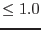
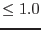

| Parameter | Mand | Type | Default | Constraints |
| inset | yes | dataset | dummy_default | |
The dataset containing the input image.
|
| outset | no | dataset | cropped_image.ds | |
The dataset to contain the (cropped) output image.
|
| trimborder | no | boolean | yes | yes|no |
Whether to trim off the any blank (zero-valued) border.
|
| xfraclo | no | real | 0.0 |  xfraclo xfraclo |
Position of the left-hand edge of the cropping rectangle expressed as a fraction of the image width (after removal of the blank border, if trimborder was set to `yes').
|
| xfrachi | no | real | 1.0 | xfrachi |
Position of the right-hand edge of the cropping rectangle expressed as a fraction of the image width (after removal of the blank border, if trimborder was set to `yes').
|
| yfraclo | no | real | 0.0 | yfraclo |
Position of the lower edge of the cropping rectangle expressed as a fraction of the image height (after removal of the blank border, if trimborder was set to `yes').
|
| yfrachi | no | real | 1.0 | yfrachi |
Position of the upper edge of the cropping rectangle expressed as a fraction of the image height (after removal of the blank border, if trimborder was set to `yes').
|
| Parameter | Mand | Type | Default | Constraints |